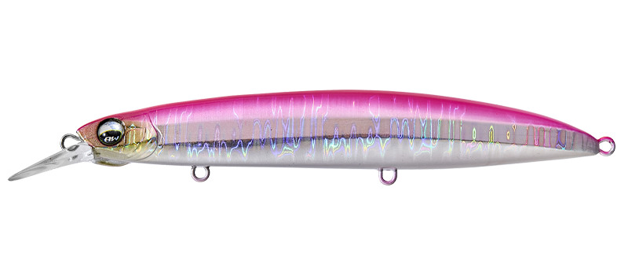
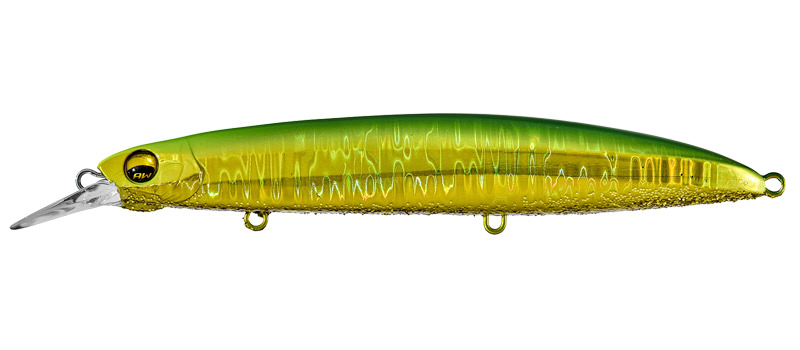
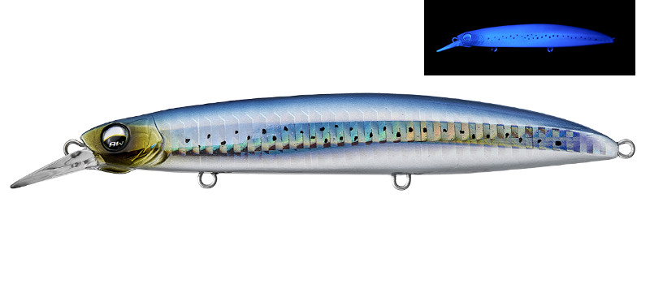
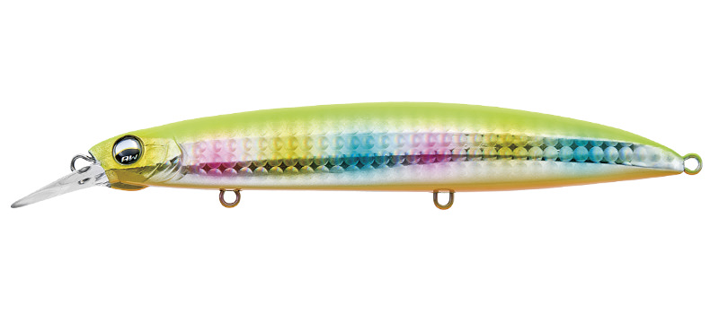

ステップマジック120S
（Step Magic 120s）
ステップマジック120S（Step Magic 120s）はAqua Wave（アクアウェーブ／コーモラン）のシンキングミノー（サワラ用）です。
ロングキャスト性能とキレのあるダートアクションで、広範囲からサワラを呼び寄せるシンキングミノーです。
スリムなフロントでジャークが軽く、太めのテールでダート後にピタッと止まる設計。ストップの瞬間に食わせる、サワラ・サゴシ狙いに特化した120mmです。

画像出典:Vivanet（アクアウェーブ）公式HP
スペック
- メーカー
- Aqua Wave（アクアウェーブ／コーモラン）
- タイプ
- シンキングミノー（重心移動）
- 全長
- 120mm
- 重さ
- 21g
- カラー
- 8色
- ターゲット
- サワラ・サゴシ
- 価格
- 2,000円（税別）
▼今すぐチェック

ステップマジック120Sの特徴
ダートで呼んで、ストップで食わせるサワラ専用設計
-
スリムなフロントでキレのあるダート
フロント形状をスリムにして、ジャーク時の負担を軽くしつつ、キレのいいダートでサワラを誘い出す。連続ジャークでも疲れにくい。
-
太めのテールでストップを強調
テールを太めにして、ダートの後に前へ飛び出さずにピタッと止まる設計。サワラのバイトをフックへ導く流線形も採用している。
-
フラットサイドと重心移動
ボディ側面のフラットサイドで明滅効果を出し、ストップとの組み合わせでリアクションバイトを誘う。スプリング付きの重心移動で、遠投性能と泳ぎ出しの良さを両立している。
ステップマジック120Sの使い方
基本はキャストして沈め、狙うレンジから2〜3回ジャークしてダートさせ、ピタッと止めて食わせる「ダート＆ストップ」です。
サワラはストップの瞬間や、止めた直後の動き出しで食ってくることが多いので、ストップを長めに入れるのがコツ。反応が無い時は、ただ巻きに軽いトゥイッチを混ぜて誘います。
ステップマジック120Sの得意な状況
サワラ・サゴシが回ってくる堤防や、沖のナブラを狙うサーフ・磯が得意です。
重心移動で遠投が利くので、ベイトが沖で追われている時や、広く探りたい時に出番があります。
ワンポイント
サワラは歯が鋭いので、リーダーは太め（30lb前後）にしておくと安心です。カラーは朝夕はピンク・チャート系、日中の澄み潮はシルバー・シラス系を基本にしましょう。
オススメカラー
ステップマジック120Sは全8色。そのうち4色を紹介します（画像は公式より）。

#A70C ピンクバックサワラ狙いの定番、ピンクバック。朝マズメや曇りの日に。

#A104E グリーンゴールドグリーンの背にゴールドのフラッシング。濁りの日や夕マズメに。

#A118 UVマジシラスシラスなど小さいベイトに合わせたナチュラル系にUV。澄み潮の日中に。

#A230 チャートバックシグナルO.B.チャートの背とオレンジのお腹で目立つアピール系。ローライトや濁り潮に。
画像出典:Vivanet（アクアウェーブ）公式HP
ステップマジック120Sに似ているルアー
-
 ピンテール サゴシチューン
ジャクソン
詳細はこちら＞
ピンテール サゴシチューン
ジャクソン
詳細はこちら＞
業界初のサゴシ専用設計のミノー。不意の平打ちでリアクションを誘う。
-
 Gコントロール
ジャクソン
詳細はこちら＞
Gコントロール
ジャクソン
詳細はこちら＞
20g・28g・40gのヘビーシンキングミノー。ゆっくり巻いても泳ぐ。
-
 コンタクト フリッツ
タックルハウス
詳細はこちら＞
コンタクト フリッツ
タックルハウス
詳細はこちら＞
水平フォールとタイトウォブリングで、サワラでも注目のヘビーシンキングミノー。